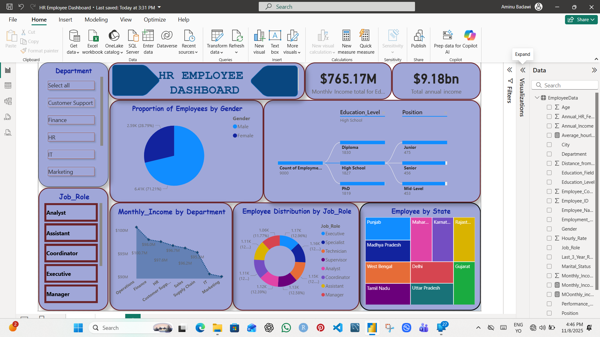

Data Scientist . AI & ML Engineer . Research Data Analyst
DQA Profiler - Data Quality Assessment & Profiling System
A structured profiling workflow for auditing dataset quality and generating decision-ready quality reports for operations,
analytics, and monitoring teams.
DQA Profiler was designed to detect data quality issues early and standardize how quality status is reported across
datasets. The system supports profiling, anomaly checks, and score-based monitoring to reduce downstream model and reporting risks.
End-to-end quality profiling for tabular datasets
Automated issue detection and validation checks
Summary quality scoring and priority ranking
Decision-ready reporting outputs
Quality Dimensions
Completeness: null and missing-value rates by feature and table
Validity: data type, format, and rule-conformance checks
Consistency: cross-column and cross-table logic checks
Uniqueness: duplicate record and duplicate key detection
Timeliness: staleness checks and freshness indicators
Integrity: relationship and reference checks between linked entities
Methodology
The workflow follows a repeatable sequence: ingestion, profiling, rule validation, issue scoring, and reporting.
This structure keeps quality assessments transparent, reproducible, and operationally useful.
Profiling and validation workflow used in DQA Profiler.
Outputs & Deliverables
Quality scorecards by table, field, and quality dimension
Issue registers with severity ranking and recommended actions
Dashboard-ready quality summaries for leadership reporting
Technical logs for repeatability and audit readiness

Quality dashboard view.Insights and action summary.
Business Impact
Reduced reporting errors by identifying quality issues early
Improved confidence in KPI and dashboard interpretation
Lower rework in analytics and model-building pipelines
Stronger governance and audit-readiness for operational datasets
Tech Stack
Python (profiling logic and validation scripts)
Pandas / NumPy (data transformation and checks)
SQL (rule validation and quality sampling queries)
Power BI / dashboard tooling (quality monitoring views)